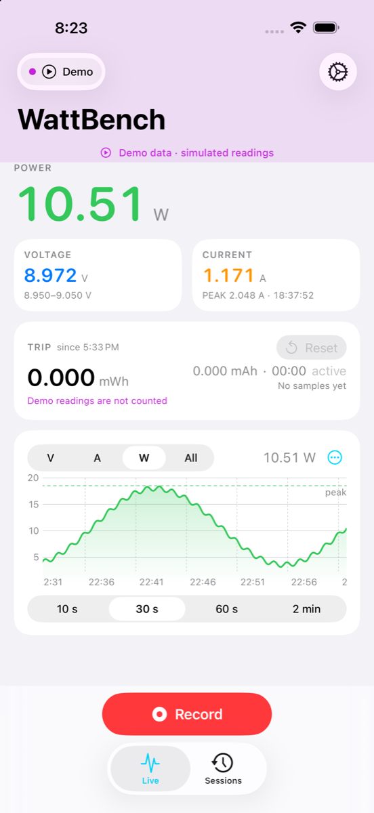
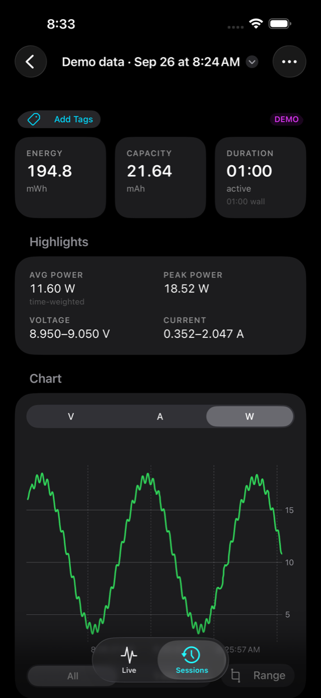
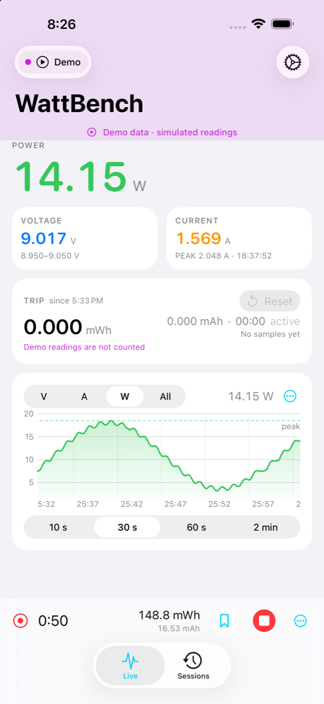
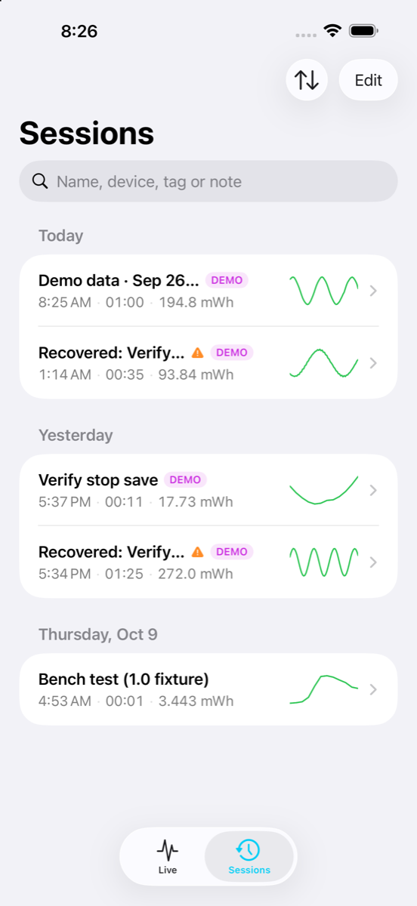
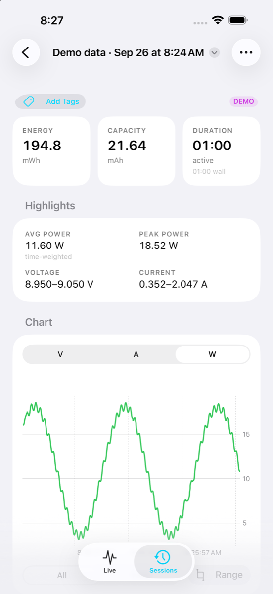
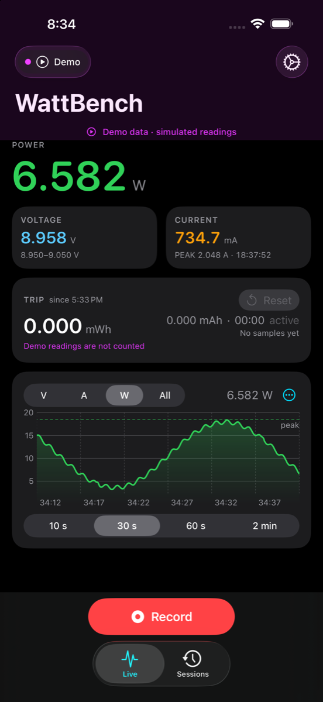
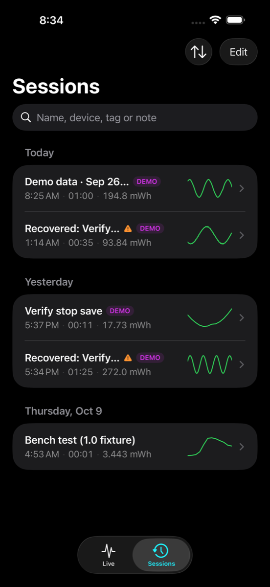

WattBench
Live power meter for the FNIRSI FNB58, on your iPhone.


WattBench turns your iPhone into a wireless display and data logger for the FNIRSI FNB58 USB power meter. Connect over Bluetooth and watch voltage, current and power update in real time, start a recording to capture a whole charge cycle, and review or export every sample later. No account, no ads, no analytics, no network access — everything stays on your phone.





Built for the bench
Live readouts
Big, glanceable voltage, current and power with peak hold, plus a scrolling chart you can scrub and zoom from 10 seconds to 2 minutes.
Trip counter
Energy (Wh) and capacity (mAh) accumulate from the moment you plug in — no recording needed. Reset it whenever you like.
Recordings you can trust
Every sample is written to disk as it arrives. Recordings keep running with the screen locked and survive a crash, a force-quit or a Bluetooth drop; dropouts show up as gaps, never hidden.
Auto-stop and markers
Stop automatically when current falls below a threshold, after a duration or at an energy target. Drop markers (“Plugged in”, “Cable swapped”…) while you work.
Session reports
Full-resolution charts with min/max envelope, drag to select a range and read its statistics, notes, tags and integrity information.
Alerts
Threshold alerts with presets, hysteresis and cooldown. A banner and haptic in the foreground, a local notification when the phone is locked.
CSV export
Share any session as CSV or a text summary — AirDrop it, save it to Files, open it in Numbers, Excel or Python.
Reconnects by itself
Remembers your meter, reconnects when it comes back, and tells you honestly when it has been unreachable too long.
Private by design
No account, no analytics, no network requests. Bluetooth is used only to talk to your meter. Privacy policy.
Quick start
- On the FNB58, open its settings menu and turn Bluetooth on.
- Open WattBench and tap Connect. Allow Bluetooth when iOS asks. Your meter appears within a few seconds; tap it. Next time, WattBench reconnects to it on its own.
- Plug the device under test into the meter. The Live tab shows voltage, current and power immediately and the trip counter starts adding up energy and capacity.
- Tap Record to capture a session. Name it, add tags or an auto-stop rule, then leave the phone locked — the recording continues in the background.
- Tap Stop. Find the session under Sessions, open its report, and share it as CSV.
No meter yet? Tap Connect, then Try Demo Data to explore every screen with simulated readings. The full user guide walks through every screen and setting.
FAQ
Which meters work?
The FNIRSI FNB58 over Bluetooth Low Energy. Other FNIRSI meters may share the protocol, but only the FNB58 has been verified. The desktop web monitor in the same repository also supports the FNB48, FNB48S and C1 over USB.
Why don't I see D+/D− voltages or temperature?
The meter only sends voltage, current and power over Bluetooth. D+/D−, temperature and protocol triggering are available on the meter's own screen or over USB with the desktop monitor.
Does recording drain my battery?
Bluetooth stays active in the background only while WattBench is connected to a meter, so a recording continues with the screen locked. Disconnect when you are done to save battery. WattBench never scans for meters in the background.
What happens if the app crashes mid-recording?
Samples are written to disk as they arrive. On the next launch you are offered the samples recorded so far — keep them as a session or discard them.
Where are my recordings stored?
On your phone, in WattBench's own Documents folder (visible in the Files app under On My iPhone → WattBench). Nothing is uploaded anywhere.
Is there a Mac or Linux version?
The same repository contains a desktop web monitor (Python/Flask) that talks to the meter over USB or Bluetooth from a computer and adds D+/D− scope, protocol triggering and spectrum views. See the README.
Something isn't working
Open Settings → Diagnostics in the app to see the Bluetooth log and raw frames, then open an issue with what you see.